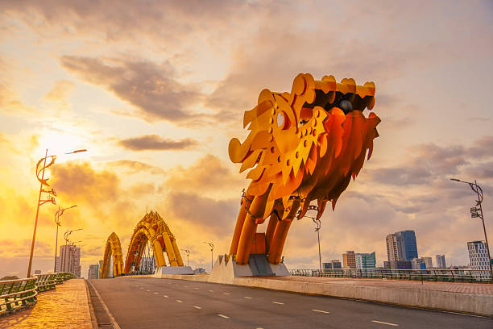
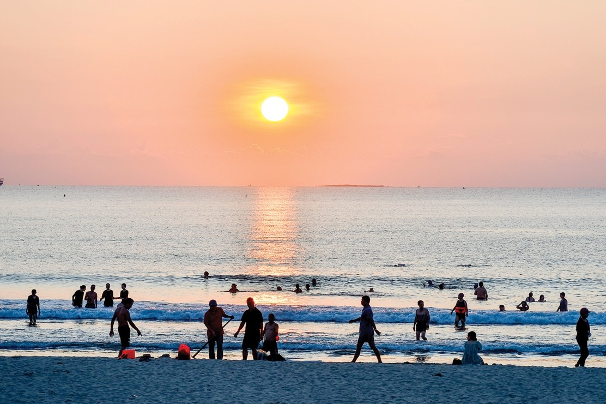
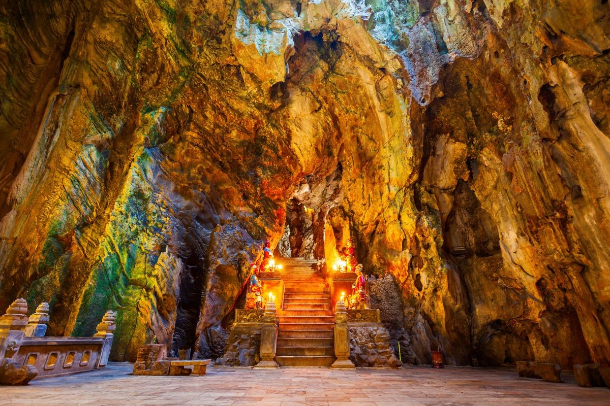
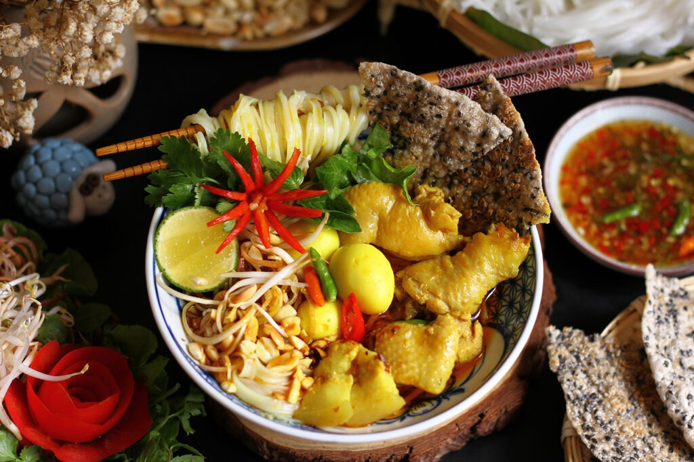
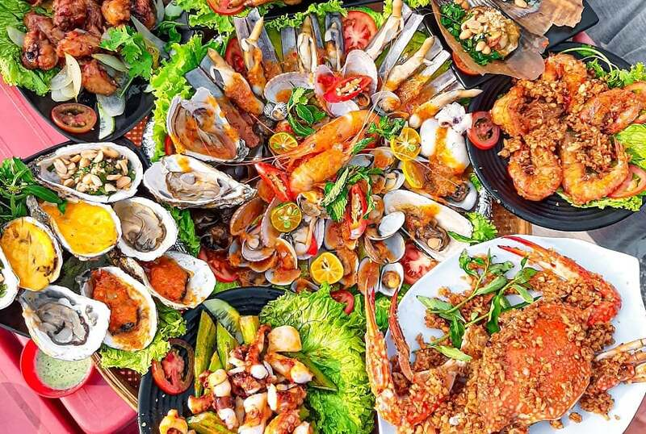
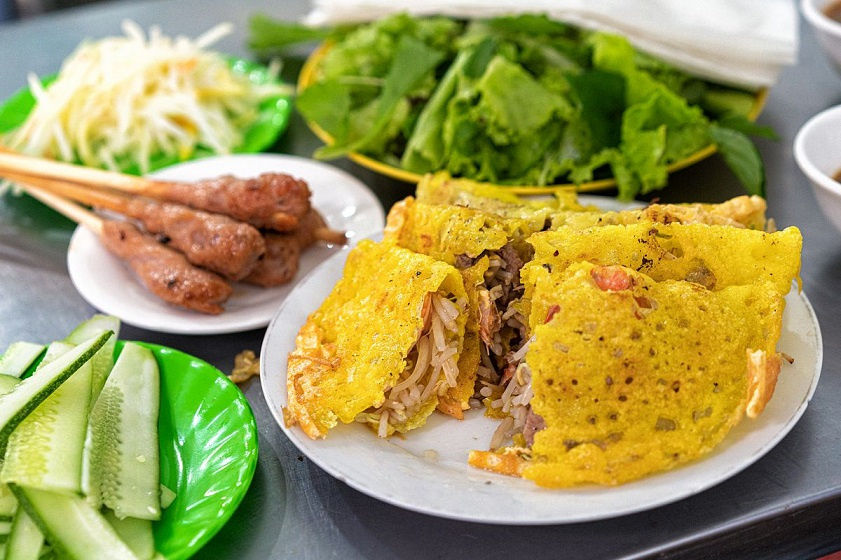

Explore Da Nang
Take a closer look at some of the beautiful attractions, beaches, and local foods that make Da Nang a memorable place to visit.

Dragon Bridge
One of Da Nang's most recognizable landmarks crossing the Han River.

My Khe Beach
A beautiful coastal destination for relaxing and enjoying the ocean.

Marble Mountains
A popular destination featuring caves, temples, and scenic viewpoints.

Mi Quang
A popular Central Vietnamese noodle dish with herbs and flavorful toppings.

Fresh Seafood
Da Nang's coastal location offers visitors many fresh seafood choices.

Banh Xeo
A crispy Vietnamese pancake commonly served with herbs and dipping sauce.